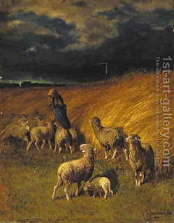

Temurah 9 - Exchange And Substitute - What Is The Difference?
One can make a (prohibited) sacrifice exchange of flock for cattle and cattle for flock, sheep for goats, males for females, unblemished for blemished, and even blemished for unblemished - and this it the " bad for good or good for bad " that the Torah meant.
Actually, the Torah said, " Don't exchange and don't substitute ." What is the difference between the two? Exchange means for another's animal, and substitute - for one's own. But we just learned that one cannot use another's animal for exchange ?! - We are dealing with the case of one who sanctified his animal with these words: "Let this be a sacrifice, and anyone who wants to use it for an exchange, can use it."
One can exchange one sacrificial animal for two, two for one, and even a hundred for one (and get a hundred sets of lashes for that). Rabbi Shimon says that one can exchange only one for one, since the Torah said " It (one) and its exchange (also one) will be holy ." What can the Sages answer? They say that "animal" (behemah) sometimes means multiple, like in the case of Jonah, who said, "and many animals" (behemah rabah). How can Rabbi Shimon defend himself now? - "Behemah rabah" indeed means many animals, but just "behemah" means only one.
Art: Charles Ferdinand Ceramano - A shepherdess with her flock before a storm